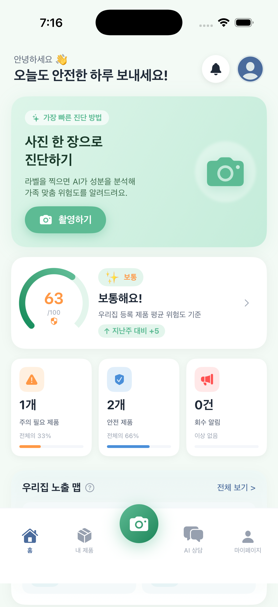

식약처·환경부·산업부 공공데이터 기반
생활화학제품 안전 AI Agent

우리가 모르는 사실
세제, 섬유유연제, 방향제, 화장품… 생활화학제품에 함유된 성분이 가족에게 어떤 영향을 미치는지 우리는 알고 있을까요?
4단계 안전 분석
복잡한 성분표 해석은 케미체크가 맡습니다. 당신은 결정만 하세요.
App Screenshots
촬영 → 분석 → 결과 → 가족관리까지, 실제 동작 화면입니다.
4가지 핵심 가치
비슷한 앱과 비교해보세요. 케미체크만이 할 수 있는 것들이 있습니다.
데이터·기술 신뢰성
3개 정부 기관, 8개 공공 데이터셋, 627,744건의 원천 데이터로 구성됩니다.
| # | 데이터셋 | 기관 | 건수 |
|---|---|---|---|
| 1 | 화장품 성분 DB | 식약처 | 285,241 |
| 2 | 생활화학제품 성분 | 환경부 | 214,815 |
| 3 | 수거·회수 제품 | 식약처 | 5,723 |
| 4 | 유해화학물질 목록 | 환경부 | 7,189 |
| 5 | 살생물제 성분 | 환경부 | 8,204 |
| 6 | 전성분 공개 제품 | 산업부 | 3,534 |
| 7 | 제품 안전 인증 | 산업부 | 96,438 |
| 8 | 알레르기 유발 성분 | 식약처 | 6,600 |
| 총 원천 데이터 | 627,744건 | ||
Demo
실제 케미체크 동작 영상과 발표자료를 제공합니다.
Beta
심사 전 베타 테스터를 모집합니다. 피드백 주시면 App Store 출시 시 우선 알림 드립니다.
FAQ
식약처·환경부·산업부 공식 데이터 기반.
7,189종 화학물질. 온디바이스. 지금 바로 체험해보세요.
사회적 가치
케미체크가 만드는
5가지 변화
앱 하나가 아닙니다. 화학물질 정보 불균형을 해소하는 공공 인프라입니다.